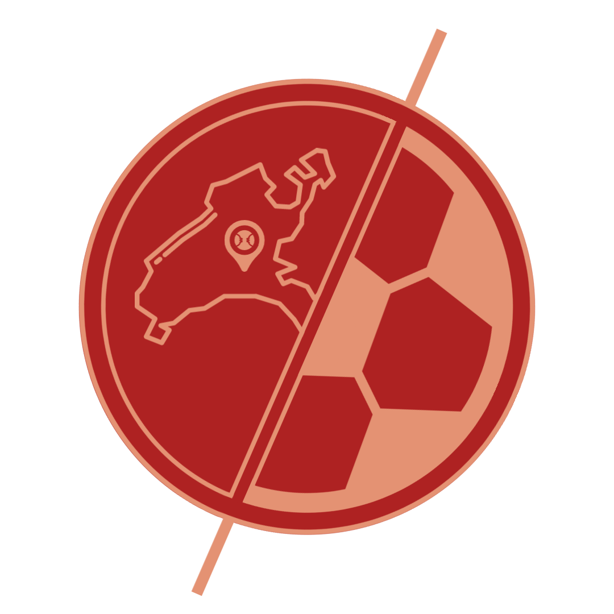

Notre savoir faire rien que pour vous
Notre entreprise de géoinformatique offre des solutions innovantes pour répondre aux besoins en matière de cartographie, d'analyse spatiale et de modélisation. Nous travaillons avec une variété de secteurs, notamment l'aménagement du territoire, la santé et les loisirs. Notre expertise en géoinformatique nous permet d'offrir des solutions personnalisées et efficaces pour répondre aux besoins de nos clients.
Nos prestations
Explorez le pouvoir de l'analyse spatiale : des données géographiques qui révèlent l'invisible.
Des cartes précises, des décisions éclairées : notre expertise cartographique donne du sens à vos données.
Des outils précieux, une nouvelle aproche : notre expertise en Web SIG vous accompagnera où que vous soyez.
Des données organisées, des solutions innovantes : laissez-nous prendre soin de vos informations cruciales.
Des solutions de pointe depuis l'espace : notre savoir-faire en télédétection élève vos projets vers de nouveaux sommets.
Nos références
Couverture A9
Création d'un jumeau numérique pour le projet de construction de l'autoroute A9 à Boveresse
Where2Play
Where2Play est une application mobile permettant de localiser des terrains de sport sur toute la Suisse romande
Histoire
Il était une fois deux jeunes apprentis passionnés par la géomatique, Amine et Arnaud. Ils avaient étudié la géomatique pendant des années et étaient fascinés par la façon dont les données spatiales pouvaient être utilisées pour résoudre des problèmes dans différents domaines.
Un jour, alors qu'ils étaient en train de discuter de leur passion pour la géomatique, ils se sont rendu compte qu'il y avait un besoin croissant pour des services de géoinformatique dans différents secteurs tels que l'environnement, l'aménagement du territoire, la santé et bien d'autres.
BENDROZ était né